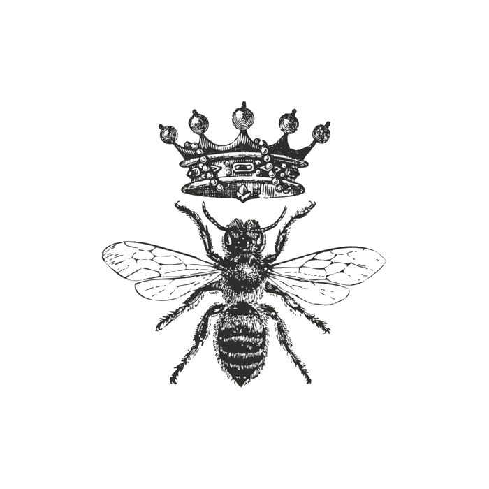

Termenul de matca (regina albina) este de obicei folosit pentru a se referi la o albină adultă, care trăiește într-o colonie de albine sau stup. De obicei este mama majorității, dacă nu a tuturor, albinelor din stup. Reginele sunt dezvoltate din larve selectate de albine lucrătoare și hrănite special. În mod normal, există un singur adult, regină într-un stup, caz în care albinele o vor urma și o vor proteja cu înverșunare.